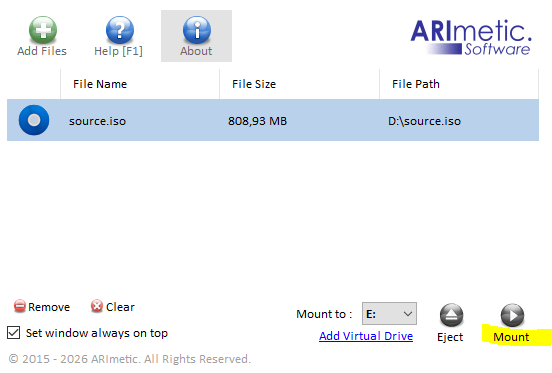
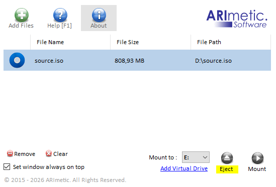
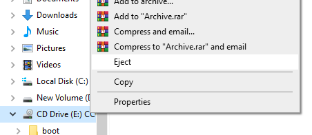

Operations
Using uDiscMounter is simple for basic tasks like adding files, mounting, and ejecting. By default, once uDiscMounter is installed on your system, any CD/DVD image file or mountable file can be opened automatically with it by double-clicking the file in Windows Explorer. On Windows 10 or newer, you may see a dialog asking you to choose a default program, where uDiscMounter will appear as an option. If you want to get more familiar with the interface, you can follow the steps below : Open File Open image files with "Add File" button or press CTRL + O. Mount Image File  Click "Mount" button Eject Image File  Click "Eject" button or you can eject mounted image file from Windows Explorer  |
| << Home << Prev | 1 2 3 4 5 | Next >> |